← All workProject 6 of 7
Project 06Designed and simulated, not built
Planetary Gearbox
A single-stage 5:1 planetary reducer for a NEMA 17 stepper, built around catalogue KHK gears. Designed in Inventor with a gear train that turns correctly in the assembly, plus gear strength, bearing, efficiency and backlash calculations.
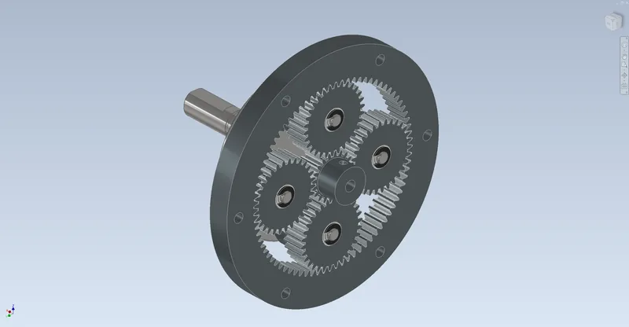
- Gear ratio
- 5.0:1
- Rated output torque, calculated
- 5.1Nm
- Efficiency at the design point, calculated
- 94.6%
- Parts in assembly
- 48
01Overview
A compact reducer that bolts onto a standard NEMA 17 stepper (StepperOnline 17HS19-2004S1). The sun gear sits straight on the motor's 5 mm D-shaft, four planets run on ball bearings on pins pressed into a steel carrier, and the ring gear is clamped between an aluminium motor adapter and the output housing. The carrier has its own 12 mm output shaft on two sealed 6001 bearings. A printed PETG bracket holds the whole unit on a bench.
Every gear is a stock KHK module 1 part (sun SS1-20A, planets SS1-30, ring SI1-80), so the tooth counts were chosen from what KHK actually sells: 20/30/80 gives 1 + 80/20 = 5:1. The only change to a bought gear is six drilled holes in the ring. The gear teeth in CAD are true involutes cut from the same outlines a 2D script checks, and one Inventor parameter (Input) turns the sun, carrier and planets at the right ratios. Designed and calculated only; nothing has been built.
Tools Autodesk Inventor 2027 / Python / NumPy / Shapely / Matplotlib / Bambu Studio
What I did
- Picked the tooth counts from KHK's catalogue instead of designing custom gears, so every gear can be ordered by part number. The CAD sun and planet weigh 36.2 g and 80.7 g against KHK's listed 37 g and 82 g, which checks the tooth geometry.
- Modelled real involute teeth and checked the mesh twice: a Shapely script over 80 positions and Inventor's own minimum-distance tool. Both give about 0.038 mm between teeth, which is the backlash I designed in.
- Drove the whole gear train from one parameter. The sun, carrier and four planets each have an angle constraint, verified against the Willis equation at three angles before it was kept.
- Wrote a buildability check with part numbers, thread engagements, fits, assembly order and cost (about $450). It found three things to measure before machining, including whether the sun's set screw lands on the motor's D-flat.
Specification
- Gears
- KHK module 1, 20 deg, S45C black oxide: sun SS1-20A (z20), 4 x planet SS1-30 (z30), ring SI1-80 (z80, 110 OD x 10 face)
- Ratio
- 1 + 80/20 = 5.0, sun in, carrier out, ring fixed; 25 mm centre distance; contact ratios 1.61 and 1.94
- Motor
- StepperOnline 17HS19-2004S1 NEMA 17 (0.59 Nm holding, 2.0 A), sun on its 5 mm D-shaft with an M4 set screw
- Bearings
- 8 x NSK MR105ZZ in the planets, 2 x SKF 6001-2RSH on the 12 mm output shaft
- Housing
- 6061-T6 motor adapter and output housing (116 OD), ring centred in 110 H7 recesses and clamped by 6 x M4
- Carrier
- 1045 steel, 70 mm plate with an integral 12 mm output shaft, 1 mm D-flat, DIN 471 ring
- Mass (Inventor)
- 2.17 kg with the motor, 1.78 kg gearbox only, 0.25 kg printed bracket
- Assembly
- 48 occurrences, 17 unique files, 141 constraints, 0 DOF; one PETG part on one Bambu plate
02Design decisions4 changes
- 01
Four planets on cantilevered pins
- Finding
- (20 + 80)/N must be a whole number, so 4 or 5 planets would fit on paper. With 5, the planet tips overlap by 2.6 mm. With 4 there is 3.4 mm between tips, but only 3.1 mm of radius at the gear face, too little for the pillars of a two-plate carrier.
- Action
- Used 4 planets and pressed the 5 mm pins into one 1045 carrier plate. Each planet runs on two MR105ZZ bearings that fit KHK's stock 10 mm bore, so the planets are used as bought.
- Outcome
- The pins bend 13 um at the rated load, small next to the 80-180 um backlash.
- 02
Rated on the catalogue number, not my AGMA result
- Finding
- AGMA 2001 contact stress allows 2.40 Nm at the sun. KHK lists the SS1-20A at 0.33 Nm surface durability per mesh, which works out to 1.06 Nm for 4 planets. KHK doesn't print its calculation conditions on the product page.
- Action
- Rated the gearbox on the lower KHK figure.
- Outcome
- 5.13 Nm continuous at the output. The motor can only push 2.83 Nm through it, so the gears have a 1.79x margin over the motor.
- 03
Opened the housing bores after a clearance check
- Finding
- A minimum-distance check in Inventor showed the planet tips (41 mm orbit radius) touching the faces that seat the ring in both housing halves: 0.00 mm, so they would rub on every turn.
- Action
- Opened both bores from 80 to 86 mm and moved the M5 mounting holes from 88 to 100 mm PCD to keep wall around the bigger bore.
- Outcome
- 2.03 mm clearance; 0 DOF and 0 clashes re-checked at 9 positions.
- 04
Tighter motor pilot from the tolerance stack
- Finding
- The first adapter had a 22.05 mm recess for the motor's 22 mm pilot. Adding up pilot play, pin position and bearing clearance, the sun could move far enough to leave only 4 um of backlash in the worst case.
- Action
- Changed the recess to 22 H7.
- Outcome
- 26 um of backlash left in the worst case; 12-28 arcmin of play at the output from KHK's backlash range.
03Views9 renders


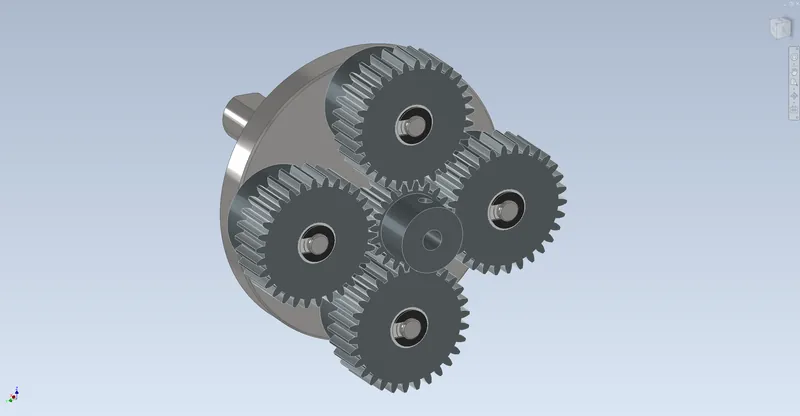

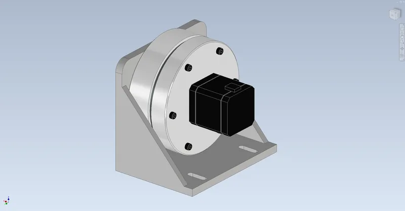

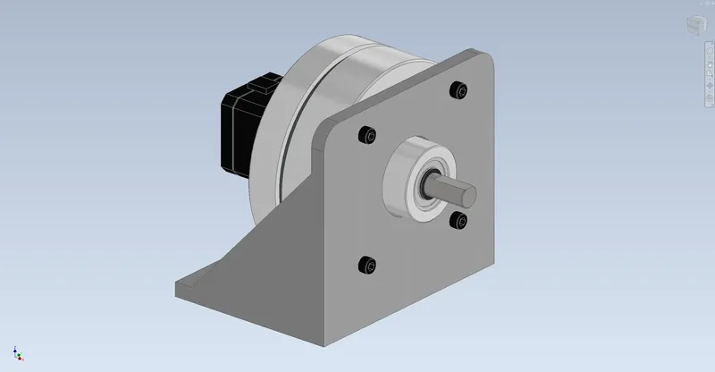

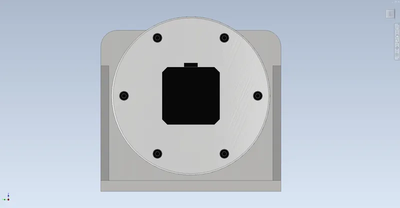

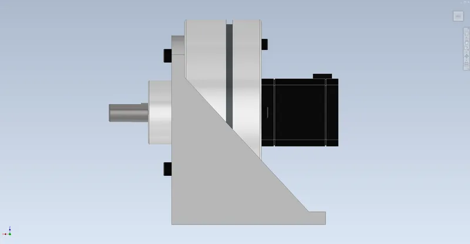

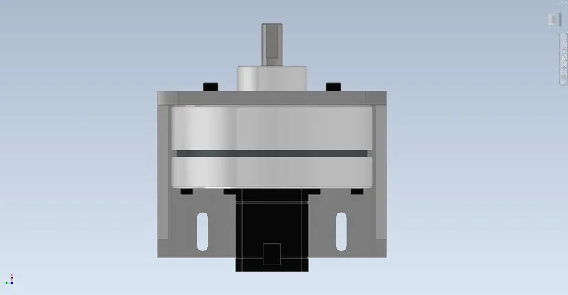

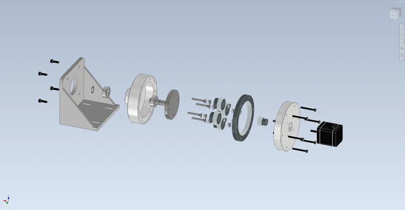

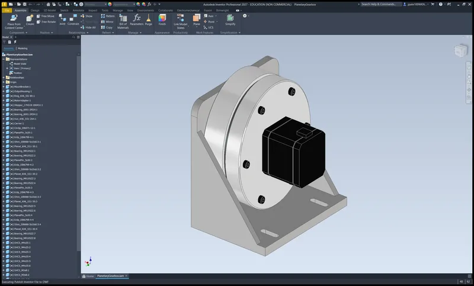
04Drawings5 sheets

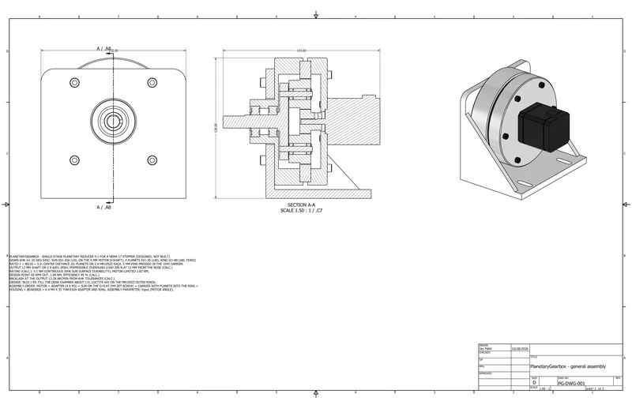

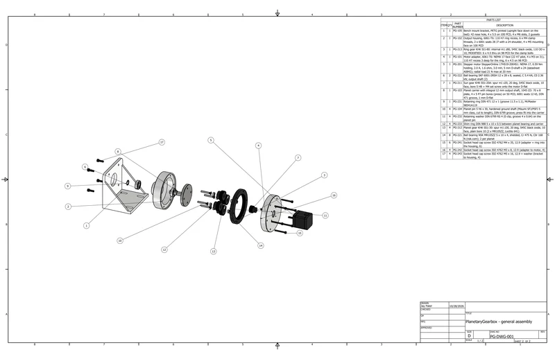

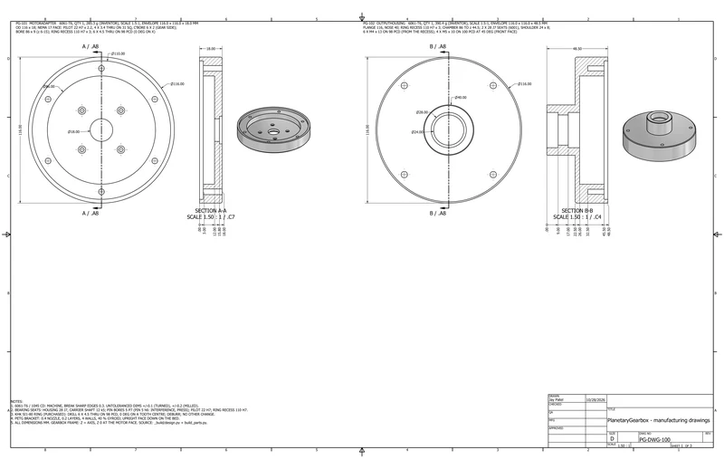

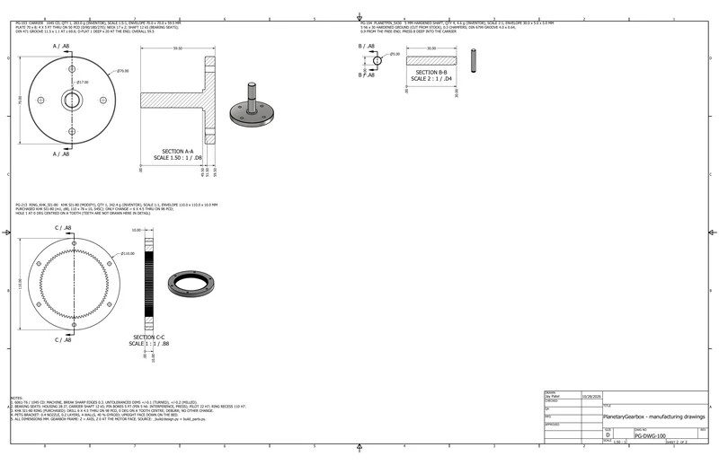

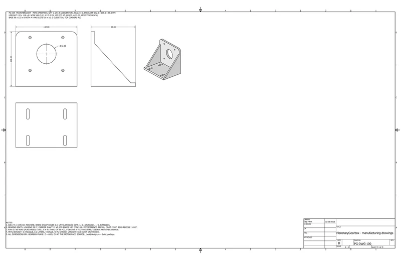
05Analysissimulated unless stated
A1 Gears

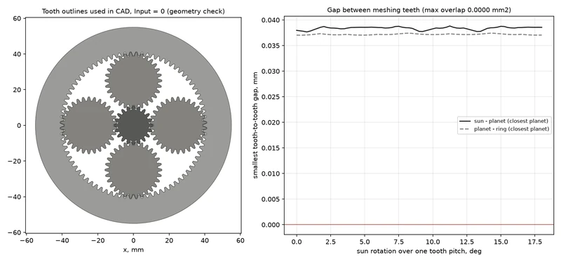

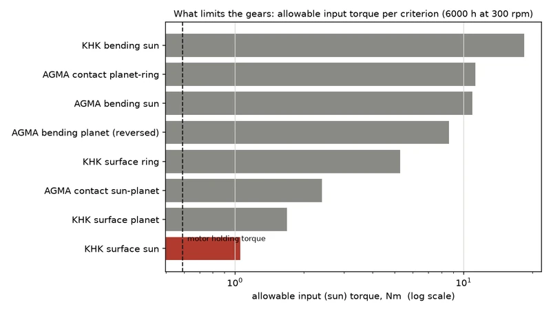
A2 Performance

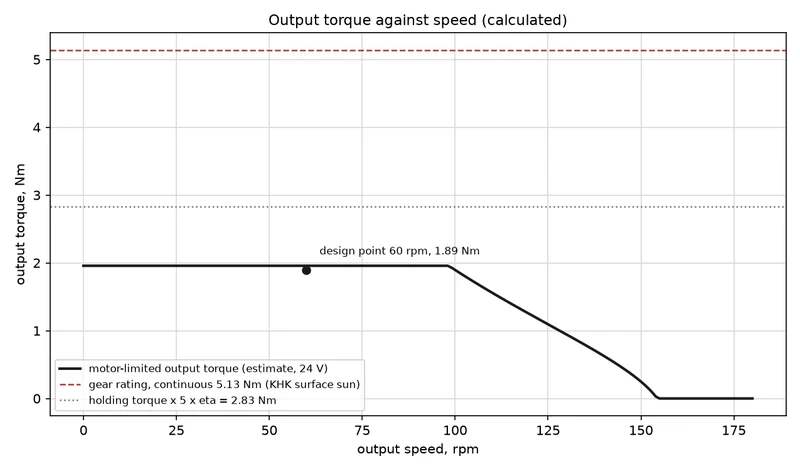

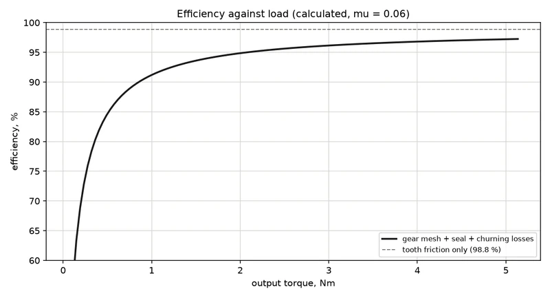
A3 Tolerances

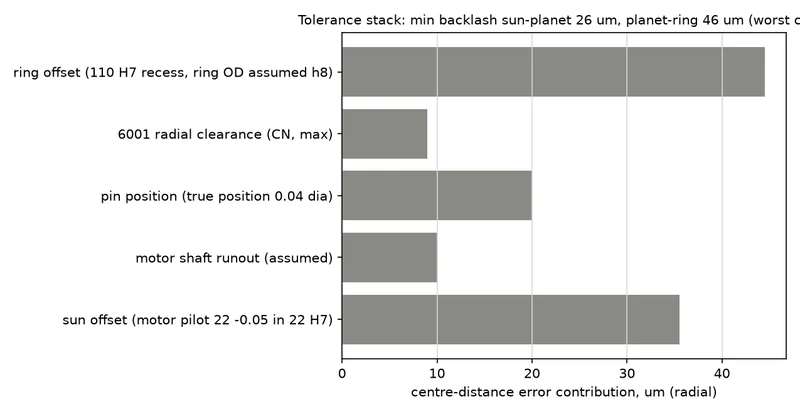
06Results8 checks
| Check | Result | Margin / status |
|---|---|---|
| Rated torque | 5.13 Nm continuous at the output (KHK sun surface durability); 2.83 Nm is all the motor can deliver at holding torque | Calculated |
| Design point | 1.89 Nm at 60 rpm output (motor 300 rpm, 24 V, torque from an estimated motor curve) | Calculated |
| Efficiency | 98.8% from tooth friction alone, 94.6% at the design point once seal drag is included; 0.67 W of heat | Calculated |
| Gear stress at motor holding torque | Contact 244 MPa (SH 2.02), bending SF 18.5 sun and 14.6 planet (reversed bending on the idler) | Calculated |
| Bearings | MR105ZZ static SF 5.6 at holding torque; 6001 L10 over 600,000 h with a 200 N overhung load | Calculated |
| Backlash | 12-28 arcmin at the output from KHK tolerances, 35 arcmin worst case with fits | Calculated |
| Tooth gaps | 0.037-0.039 mm between meshing teeth in every position checked | Measured in Inventor |
| Interference | 0 clashing pairs at 9 input angles from 0 to 341 deg; kinematics error 0.0 deg | Checked in Inventor |
07Files8 downloads
- Calculation reportPDF · 387 kB
- Assembly drawingPDF · 367 kB
- Manufacturing drawingsPDF · 264 kB
- Bill of materialsCSV · 6 kB
- Test summaryMD · 6 kB
- Buildability checkMD · 7 kB
- Assembly STEPSTP · 6.2 MB
- Print plate 1, PETG3MF · 24 kB
08Limits and assumptionsread before quoting a number
Designed and calculated only: the gearbox has not been built, and every number is a CAD measurement, a calculation or a catalogue value. Gear dimensions and strength figures are from KHK's catalogue pages; KHK doesn't list the conditions behind its strength values, so the gearbox is rated on them as published. Gear hardness (180 HB), AGMA factors, tooth friction and seal drag are assumed class values. The motor torque-speed curve is my estimate from its electrical data, not the maker's curve, and the motor mass comes from reseller listings. The stepper driver, power supply and grease are in the BOM but not modelled. Three things should be measured on the real parts before machining: where the motor's D-flat starts, the KHK bore and ring OD tolerances, and whether grease reaches the motor face.